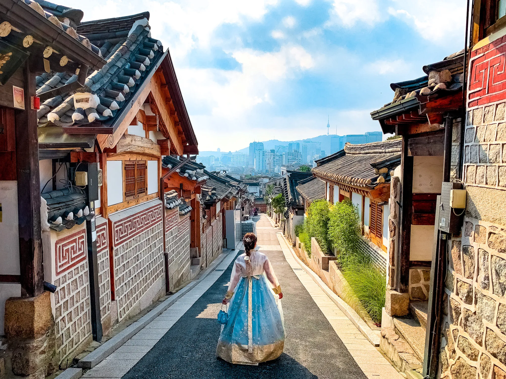

Popular Tourist Attractions in Seoul

Take a visit to the Bukchon Hanok Village for a taste of Korean traditional culture and architecture. This preserved district of several ancient neighborhoods gives you a feel for what it was like to live in Korea 600 years ago. The neighborhoods of narrow streets feature hanoks or traditional Korean houses.
Rising almost 500 meters, this communications and observation tower provides dramatic views of the city. A cable car whisks you up the side of Mount Namsan to the base of the tower. From here, you can go up in the tower and visit any one of four observation decks, one of which is a rotating restaurant.

First built in 1395, Gyeongbokgung Palace is the largest of Seoul's five grand palaces built during the powerful Joseon dynasty. Destroyed and rebuilt several times over the centuries, it was restored to its original glory after the Second World War and totally restored in the 1990s.
Bukchon Hanok Traditional Village
Namsan Seoul Tower
Gyeongbokgung Palace
Must Visit Places
Myeongdong Shopping Street
It is definitely the most famous shopping spot in Seoul. The place is vibrant and is always crowded as it not only covers fast fashion shops but also the most famous brands, departmental store chains, coffee shops, restaurants, and karaoke houses. The dense grid of streets found in this bustling neighborhood are packed with almost 2 million people every day. People visit at all hours of the day looking to enjoy some of the best street food and nightlife in all of Korea.
It is definitely the most famous shopping spot in Seoul. The place is vibrant and is always crowded as it not only covers fast fashion shops but also the most famous brands, departmental store chains, coffee shops, restaurants, and karaoke houses. The dense grid of streets found in this bustling neighborhood are packed with almost 2 million people every day. People visit at all hours of the day looking to enjoy some of the best street food and nightlife in all of Korea.
Lotte World Tower
This 500 meter skyscraper, one of the newest attractions in Seoul, is the tallest building in Korea and the fifth-tallest building in the world. The vase-like shape, with gentle curves, is designed to mimic traditional Korean ceramic pieces. There are several indoor and outdoor observation areas (called Seoul Sky) at the top on the 117th-123rd floors. Views are spectacular both during the day and at night, and you can see 360-degrees around the city.
On the 118th floor, there's the Sky Deck with the world's highest glass floor. The floor changes from opaque to clear, terrifying unsuspecting visitors. The journey to the top is done via super fast, double-decker elevators, with windows on one side and LED screens on the other three and on the ceiling.
Inside the tower are offices, luxury residences, and the SIGNIEL SEOUL luxury hotel. There's also the Lotte World Aquarium, Lotte Museum of Art, and an enormous shopping mall. The tower is home to the Lotte Concert Hall and Lotte Cinema, a state-of-the-art, 21-screen MoviePlex with the world's largest movie screen.
This 500 meter skyscraper, one of the newest attractions in Seoul, is the tallest building in Korea and the fifth-tallest building in the world. The vase-like shape, with gentle curves, is designed to mimic traditional Korean ceramic pieces. There are several indoor and outdoor observation areas (called Seoul Sky) at the top on the 117th-123rd floors. Views are spectacular both during the day and at night, and you can see 360-degrees around the city.
On the 118th floor, there's the Sky Deck with the world's highest glass floor. The floor changes from opaque to clear, terrifying unsuspecting visitors. The journey to the top is done via super fast, double-decker elevators, with windows on one side and LED screens on the other three and on the ceiling.
Inside the tower are offices, luxury residences, and the SIGNIEL SEOUL luxury hotel. There's also the Lotte World Aquarium, Lotte Museum of Art, and an enormous shopping mall. The tower is home to the Lotte Concert Hall and Lotte Cinema, a state-of-the-art, 21-screen MoviePlex with the world's largest movie screen.
Bukhansan National Park
One of the most popular pastimes in Seoul is hiking at this stunning national park just outside the city. Aside from a variety of hiking trails for every skill level, you’ll also see lots of flora and fauna, forests, temples and ancient fortresses. The park has three peaks -- Baekundae, Insubong, and Mangnyeongdae – all of which are great to hike. Overlooking Seoul, the scenery is stunning. Despite the park’s overwhelming popularity, it is still possible to find secluded spots to relax and take in the fabulous views. Among the many highlights on show is the historic Bukhansanseong Fortress and its winding wall, which snakes its way so delightfully along the hills and mountainsides of the national park.
One of the most popular pastimes in Seoul is hiking at this stunning national park just outside the city. Aside from a variety of hiking trails for every skill level, you’ll also see lots of flora and fauna, forests, temples and ancient fortresses. The park has three peaks -- Baekundae, Insubong, and Mangnyeongdae – all of which are great to hike. Overlooking Seoul, the scenery is stunning. Despite the park’s overwhelming popularity, it is still possible to find secluded spots to relax and take in the fabulous views. Among the many highlights on show is the historic Bukhansanseong Fortress and its winding wall, which snakes its way so delightfully along the hills and mountainsides of the national park.